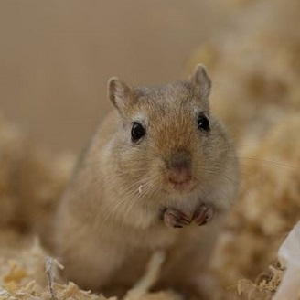

Gerbils
Personality
- Social
- Curious
- Active
- Love digging
- Enjoy playing and grooming each other
Activities One Can Do With Gerbils
- Watch them interact with each other
- Watch them take sand baths
- Can handle them, but gerbils will likely try to jump out of your hands
Facts
- Live up to 3 to 5 years
- Enjoy sand baths
- Rarely bite
- Their teeth continually grow (need to provide hard things for them to chew on)
Diet
- Food mix like Gerri Gerbil Food
- Small amounts of sunflower seeds
- Can have small portions of fresh food like: carrots, cucumbers, apples with no apple seeds, and grapes
- Treats: plain Cheerios and whole wheat toast
Living Environment
- For gerbils to be happy, get two or more gerbils that are familiar with each other
- Tank
- Carefresh or Aspen bedding recommended
- Sleeping house
- Food bowl
- Water bottle
Toys
- Solid exercising wheel
- Cardboard tubes (paper towel rolls)
- Wooden chew toys
- Avoid plastic toys